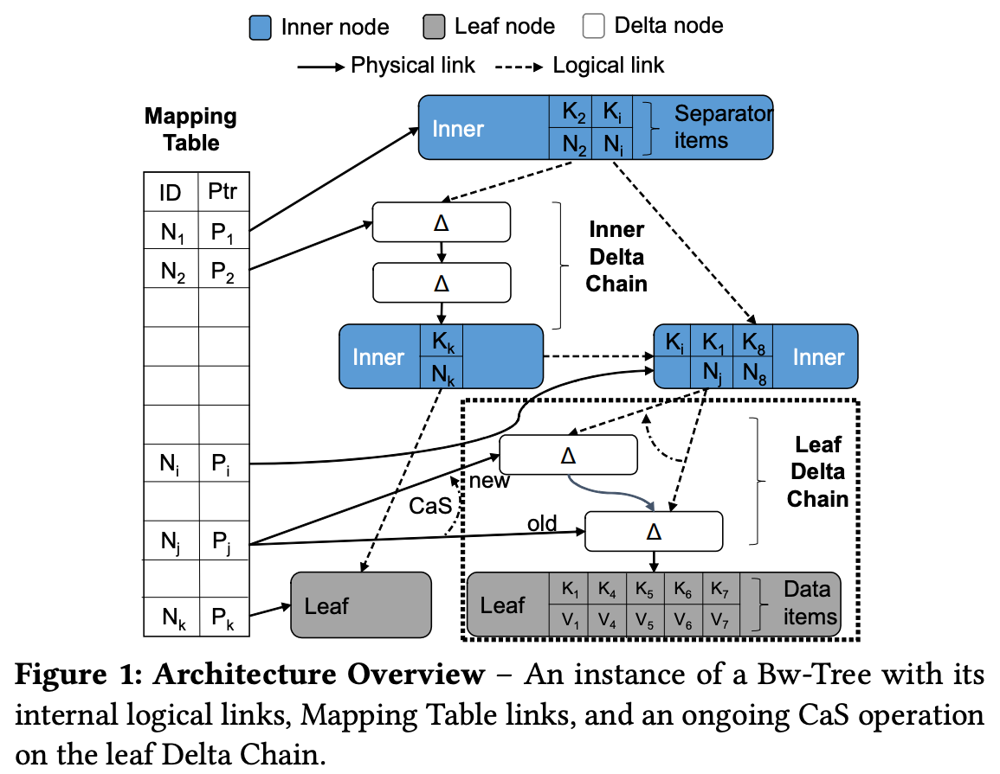
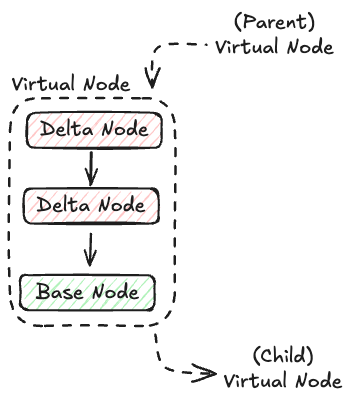
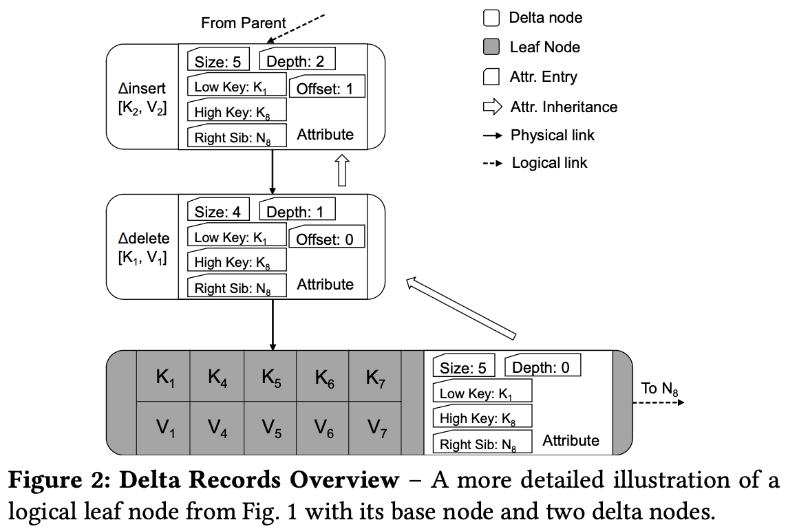

원본 논문
- 이 글은 Building a Bw-Tree Takes More Than Just Buzz Words, SIGMOD’18 논문을 읽고 정리한 글입니다.
- 별도의 명시가 없으면, 본 논문에서 그림을 가져왔습니다.
2.0. Prologue
Arbitrary section
- 그냥 2.1. 직전의 내용이고, 논문에는 별도 section 으로 numbering 되어 있지는 않습니당
- Bw-Tree 는 DBMS 의 Index 로서 thread pool 과 같이 생성되고, 따라서 여러개의 thread 들이 동시에 접근하게 된다.
- 또한 (original Bw-Tree 는) GC 를 위한 별도의 background thread 가 돌아간다.
- B+ Tree 와의 주된 차이점은 node 를 직접적으로 변경하는 것이 금지되어 있다는 것이다.
- 이것은 (1) cache line invalidation 을 막기 위함 과 (2) lock 을 사용하지 않기 위함 이다.
- 이것을 달성하는 주된 아이디어 두개는 다음과 같다:
- Delta chain: Node 를 변경하는 것은 직접적으로 변경하는 것이 아닌 per-node delta node chain 을 이용한다.
- Indirection layer:
- Parent node 에서 가리키는 child node 의 주소가 delta node 가 생성됨에 따라 변경될 수 있다 (이해가 안된다면 일단 넘어가자).
- 이 parent node 에 적힌 child node 의 주소를 변경하는 것 또한 node 자체를 변경하는 것이기에, logical ID 를 이용한 indirection 으로 이 문제를 해결한다.
- 즉, child 의 physical addr 가 바뀌어도 이놈에 대한 logical ID 매핑만 변경해 주면 parent node 에서는 동일한 logical ID 로 해당 node 를 (논리적으로) 가리키게 할 수 있다.

- 위의 그림이 전체적인 architecture 를 그린 것인데,
- (Physical 하게) “Node” 는 총 세가지 종류가 있다.
- Leaf node: 실제 data 가 담기는 node (B+ Tree 와 동일)
- Inner node: Guidepost node (B+ Tree 와 동일, intermediate node 임)
- Delta node: Leaf, Inner node 에 대한 변경사항 (delta) 를 담는 node
- Bw-Tree 를 초기화할 때는, Leaf node 하나와 Inner node 하나가 생성된다고 한다.
- 그리고 logical 하게 묶어보면, 이 “node” 들은 다음과 같이 분류할 수 있다.
- Base node: Leaf node 와 Inner node
- 둘 다 “원본” 이라는 공통점으로 묶었다고 생각하면 된다.
- Logical node (Virtual node): Base node 와 Delta node
- Delta node 들은 이 Base node 에 대한 변경사항이므로
- Base node: Leaf node 와 Inner node
- 이때 모든 physical node 는 logical ID 를 갖고 있고, 이것과 physical addr 와의 매핑은 Mapping Table 에서 관리한다.

- Parent node 는 key 에 대한 route 를 physical addr 가 아닌 logical ID 로 저장한다.
- 따라서 parent-child 간에는 logical link 가 형성되고, node-maptable 간에는 physical link 가 형성된다.
- 다른 관점에서는 위처럼 됨: Virtual node 끼리는 logical link 로, virtual node 내에서는 physical link 로 연결된다.
- 이 mapping table entry 를 변경하는 것은 Compare and Swap (CaS) instruction 으로 수행한다.
- 이것은 atomic instruction 으로, logical-physical mapping 이 atomic 하게 변경되므로 node-node link 도 atomic 하게 변경된다.
- 또한 이 instruction 를 사용하면 mapping table entry 를 변경하는 것도 atomic 하게 처리할 수 있게 해준다고 한다.
2.1. Base Nodes and Delta Chains

- 변경사항은 delta node 에 담겨서 delta chain 의 head 에 들어간다.
- 즉, 최신의 delta 가 head 에 들어가고 오래된 delta 는 tail 쪽에 위치하는 “시간순” 배치를 가진다. (Chronological)
- 이 delta chain 의 head 를 (parent) base node 가 logical link 로 가리키고 있고, tail 은 다음 (child) base node 를 physical link 로 가리키고 있으며, 중간의 delta node 는 그 이전의 delta node 를 physical link 로 가리키고 있다.
- Base node 와 delta node 에는 모두 metadata (attribute) 가 저장되는데, 이놈은 해당 시점에의 Virtual node 의 “상태” 를 기록하는 역할을 한다.
- 여기에는 다음의 여섯가지 값이 담긴다:
- Low-key: 해당 Virtual node 에의 가장 작은 key
- 이놈은 기본적으로는 predecessor (이전의 delta 혹은 base node) 의 것을 그대로 상속받는다.
- 하지만 split 이 발생하면, split 되어 쪼개진 양쪽 node 중 오른쪽의 Low-key 는 split key 로 설정된다.
- High-key: 해당 Virtual node 의 right sibling 에 대한 Low-key
- 즉, ”Virtual node 에의 가장 큰 key” 의 다음 key 이다.
- Split 이 발생하면 split 되어 쪼개진 양쪽 node 중 왼쪽의 High-key 가 split key 로 설정된다.
- Merge 시에는 오른쪽의 High-key 가 merge 이후의 High-key 가 된다.
- Right-sibling: 말 그대로 해당 Virtual node 의 right sibling virtual node 의 logical ID 가 담긴다.
- Size: Virtual node 에 담긴 key 의 갯수
- Depth: 해당 node 부터 base node 까지의 거리. 따라서 base node 는 이 값이 0이고, delta node 는 1씩 증가하는 값을 가진다.
- Offset: 변경된 값의 위치
- 라고 말하면 뭔소린가 하는데, 몇번째 key 가 변경되었는지에 대한 값이다.
- 즉, 위의 예시에서 에 대한 record 에 대해서는, 첫번째 key 이므로 offset 은 0이 되는 것.
- 이 값은 thread 가 record 를 추가할 때 계산되어 저장되고, tree 를 traverse 할 때 사용된다.
2.2. Mapping Table
- Bw-Tree 는 B-link Tree 처럼 sibling 끼리 link 되어 있고, 따라서 하나의 (base) node 는 두개의 inbound pointer 가 연결된다: 하나는 parent 로 부터 연결된 것, 그리고 나머지 하나는 왼쪽 sibling 으로부터 연결된 것.
- 기존의 B-link Tree 에서는 이들을 atomic 하게 변경하려면 HW 의 도움을 받거나 복잡한 SW 구현이 필요했는데, Bw-Tree 에서는 mapping table 을 구성해 이들을 indirection 하는 방식으로 간단하게 atomic 하게 처리할 수 있다.
- 이 atomic instruction 이 Compare-and-Swap (CaS) 이고, 이놈은 거의 모든 architecture 에서 지원한다.
- 다만 CaS 는 실패할 수가 있는데 이때 thread 는 작업을 전부 취소하고 다시 시작한다.
- 즉, root 부터 시작해서 다시 traverse 하는 것.
- 이것은 어찌 보면 overhead 이고, root 가 아닌 다른 곳에서부터 시작하도록 optimize 가 가능하지만 굳이 그럴 필요는 없다고 한다.
- 어차피 tree node 들이 L1 cache 에 다 올라와 있을 것이기 때문.
- 이 아이디어는 F2FS 에서와 비슷한 접근이다.
2.3. Consolidation and Garbage Collection
- Delta chain 은 점점 늘어나고, 이것은 당연히 문제가 된다.
- 메모리 사용량도 커지거니와
- 방문하는 node 의 수가 커지기 때문에 traverse time 도 늘어난다.
- 따라서 이 delta chain 을 다시 base 로 합치는 Consolidation 작업을 worker thread 가 해주게 된다.
- 이 작업을 하는 조건은 오리지널 Hekaton 버전 Bw-Tree 에서는 delta chain length 가 8이 될때 해주는 것이 가장 좋다고 적어놓았는데,
- OpenBwTree 에서는 이것을 inner node 와 leaf node 에 따라 다르게 가져가는 것이 좋다고 한다.
- Consolidation 을 하는 것은 간단하다.
- 그냥 base node 를 복사해다가 delta node 를 쭉 적용한 뒤에, 이 메모리 공간을 mapping table 에 업데이트만 해주면 된다.
- 그리고 이렇게 해서 쓸모없어진 node 들은 GC (reclaim) 되는데, 당연히 이것은 이 node 에 아무도 접근하지 않을 때 수행해야 한다.
- 이 GC 시점을 잡는 것은 Section 4.2. 에 설명하는 epoch-based GC 방식을 사용한다.
2.4. Structural Modification
- B+ Tree 에서와 마찬가지로, 이놈도 overflow 되어 split 되거나 underflow 되어 merge 하는 작업이 수행된다.
- 이런 구조 변경 작업을 Structural Modification Operation (SMO) 라고 하는데, Bw-Tree 에서의 SMO 를 간단히 설명해 보면 다음과 같다.
- SMO 작업은 (1) 다른 thread 에게 SMO 를 진행한다는 것을 알리기 위한 delta 를 추가하는 Logical phase 와 (2) 실제로 SMO 를 적용하는 Physical phase 두 단계로 나뉜다.
- Logical phase 에서는:
- 일단 high-key 나 right-sibling 등의 node attribute 를 변경하여 “논리적” 으로 두 node 를 합치거나 쪼갠다.
- 다만 이 node attribute 를 변경하는 것도 delta node 를 추가하는 것으로 수행되는데, 이때의 delta node 는 이나 type 이다 1.
- 이렇게 node attribute 를 먼저 변경함으로써 SMO 가 진행되는 와중에도 일관된 virtual node 의 상태를 바라볼 수 있게 해준다.
- 즉, SMO 의 결과 상태로 node attribute 를 선-변경하는 것.
- Physical phase 에서는:
- 뭐 실제로 작업을 한 다음에 mapping table 을 바꿔준다.
- 이것은 logical phase 를 수행한 thread 가 해도 되고 딴놈이 해도 된다고 한다.
- Logical phase 에서는:
- 이 작업은 delta chain 과 indirection layer 를 활용하기에 마찬가지로 lock-free 하지만, CaS fail 에서 자유로울 수는 없다.
- 만약 CaS fail 상황에서 여러 thread 가 협력하여 SMO 를 진행하는 Help-along protocol 도 있다고 한다.
Footnotes
-
논문에서는 INSERT 나 REMOVE type 도 말하는데, 이건 어떻게 사용되는건지는 잘 모르겠음 ↩